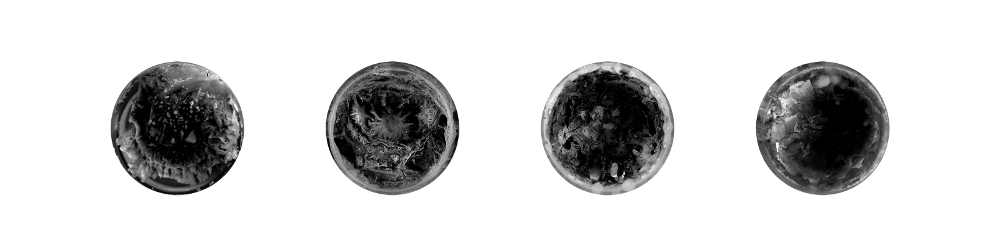
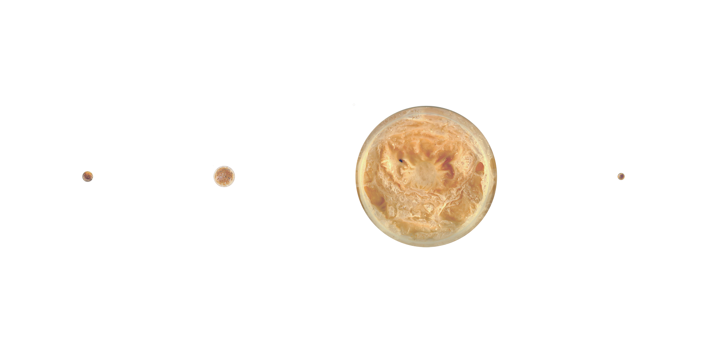

Luas de leite

Luas de leite [monika, vaca, cabra, ovelha] em pb, 2020. Formato variável.

Luas de leite [monika, vaca, cabra, ovelha] em Cosmic Latte, 2020. Formato variável.

Luas de leite [monika, vaca, cabra, ovelha] em pb, 2020. Formato variável.

Luas de leite [monika, vaca, cabra, ovelha] em Cosmic Latte, 2020. Formato variável.